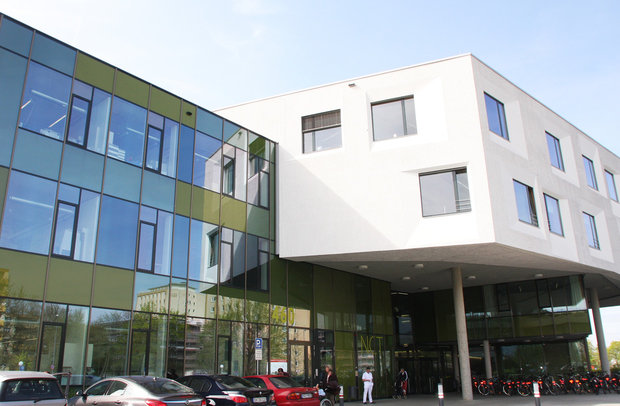
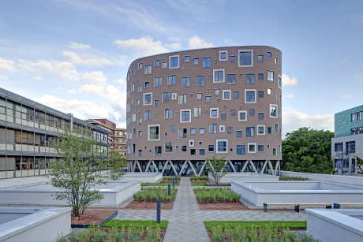
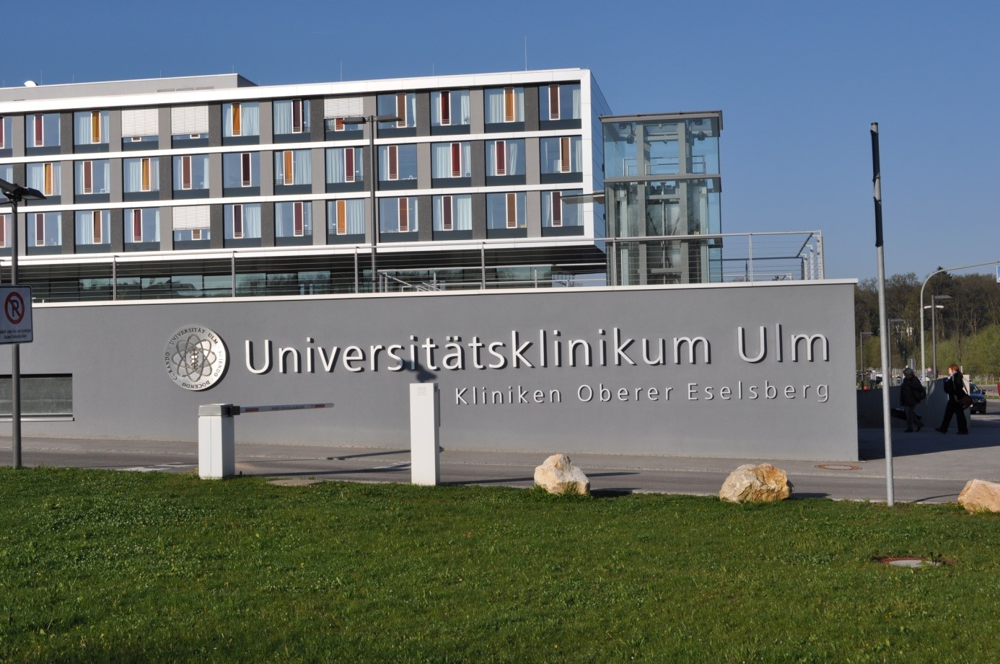
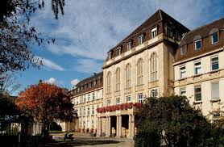
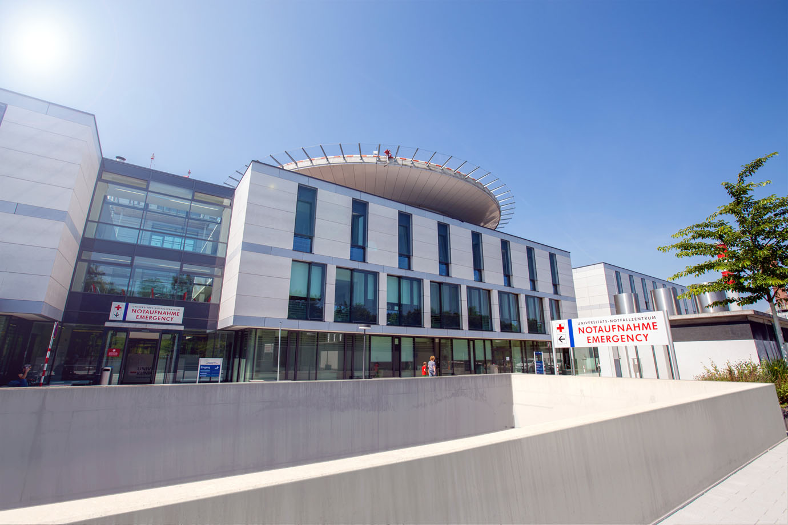

Universitätsklinikum Heidelberg
Особенностью работы Университетской клиники Гейдельберг является разработка и внедрение инноваций в
ежедневную медицинскую практику. Особое внимание научно-исследовательские центры и отделения клиники уделяют
лечению сердечно-сосудистых и онкологических заболеваний. Хорошо развиты здесь и другие высокотехнологичные отрасли медицины.
Именно в университетской клинике Гейдельберг находится Всегерманский научно-исследовательский Центр по изучению рака
(DKFZ). В нём, под руководством профессора Д.Йегера, работают 2000 сотрудников. 850 научных работников занимаются
изучением факторов риска, механизмами развития онкологических заболеваний, оценивают опыт лечения различных онкопатологий,
разрабатывают новейшие методы лечения. В дигитальном архиве накоплен огромный банк данных опухолей и сывороток крови.
В состав Центра входят институты молекулярной биологии и биохимии.
Болезни, которые эффективно лечатся в Университетской клинике Гейдельберг:
- Рак груди. Отделение маммологии специализируется на лечении патологии молочной железы. Рак груди – одно из
приоритетных направлений в работе его врачей. Оно тесно сотрудничает с гинекологическим отделением, в
частности – с подразделением онкогинекологии. Здесь используются ультрасовременные методики диагностики и терапии рака груди.
- Рак толстого кишечника. Отделение гастроэнтерологии и гепатологии предлагает качественные услуги по лечению
рака нижних отделов кишечника. Здесь проходят лечение пациенты с редко встречающимися опухолями, такими как
гастроинтенстинальныестромальные опухоли. Отделение сотрудничает с Национальным центром онкозаболеваний Гейдельберга.
- Диабет. Отделение эндокринологии и обмена веществ считается одним из лучших для терапии сахарного диабета
1 и 2 типов. На базе отделения организован Центр лечения дебета и ожирения. Ведением больных занимаются
специалисты разного профиля.
- Кардиохирургия. Отделение хирургии сердца обладает высококвалифицированными хирургами, которые проводят
операции любой сложности. Здесь проводится трансплантация сердца, аорто-коронарное шунтирование с использование
малоинвазивных технологий, хирургия аорты и клапанов сердца. Проводится эндопротезирование сосудов.
- Кардиология. Отделение кардиологии, ангиологии и пульмонологии является крупнейшим в Университетской клинике
Гейдельберг. Оно включает 9 подразделений. Здесь работает более 500 квалифицированных сотрудников.
В отделении проводится лечение любых кардиологических заболеваний.
- Ортопедия. Отделение ортопедии и травматологии занимается консервативным и хирургическим лечением пациентов
заболеваниями костно-мышечной системы и травмами любой тяжести. Для каждого пациента разрабатывается индивидуальный
план лечения. В отделении проводятся операции по эндопротезированию суставов, микрохирургические вмешательства на
кисти, функционирует Центр хирургии позвоночника.
- Рак простаты. Отделение урологии признано Центром передового опыта в лечении всех заболеваний мочеполовой системы.
Ежегодно здесь проходит лечение более 16 тысяч пациентов. В распоряжении врачей имеется робот-хирург DaVinci.
С его помощью проводится радикальнаяпростатэктомия.
- Химиотерапия и лучевая терапия. Гейдельбергский национальный онкологический центр относится к Немецкому центру
исследования рака, Университетской клинике Гейдельберг, Торакальной клинике при этом же университете, а также
Немецкой организации борьбы с раком. Благодаря междисциплинарному сотрудничеству и хорошему оснащению, здесь
применяются самые передовые и высокоэффективные методики лучевой и химиотерапии.

Universitätsklinikum Tübingen
Университетская клиника Тюбингена (УКТ) является университетским центром медицины, исследования и науки. Являясь
клиникой максимального обеспечения, университетская клиника Тюбингена известна далеко за пределами региона. Клиника
выполняет функцию окружной больницы для города и округа Тюбинген. 17 отделений университетской клиники расположены
в двух районах города: в районе Таль в центре города и в районе Шнаренберг, находящемся к северу от центра города.
В распоряжении университетской клиники Тюбингена имеются новейшие диагностические и терапевтические возможности.
УКТ предлагает весь спектр медицинского обслуживания в Германии.
Университетская клиника Тюбингена имеет отличную репутацию далеко за пределами Германии и многолетний опыт лечения
и обслуживания интернациональных пациентов. Клиника приглашает пациентов со всего мира, которые хотят пройти курс
лечения в Германии и воспользоваться всеми преимуществами высоких стандартов в области исследований, медицинского
обеспечения и ухода.
В структуру Университетской клиники г. Тюбинген входят 17 клиник и 41 отделение, 9 институтов и 15 специализированных
центров. Учреждение состоит из двух филиалов: Клиники Берген (район Шарренберг) и клиники Таль (район Инненштадт).
Между клиниками курсирует специально выделенный для пациентов автобус. Всего в клинике насчитывается 1 599 койко-мест
(включая дневной стационар). Ежегодно здесь лечатся в среднем 71 500 амбулаторных и 34 400 стационарных пациентов.
Университетская клиника Тюбингена занимает 5-ое место в рейтинге самых лучших клиник Германии журнала Focus в 2017 году!
Департаменты клиники и клиники входящие в состав УКТ:
- Департамент офтальмологии:
- Клиника Офтальмологии
- Офтальмологический научно-исследовательский институт глазных болезней
- Департамент женского здоровья:
- Перинатальный центр
- Гинекологическая клиника
- Научно-исследовательский институт по охране здоровья женщин
- Департамент педиатрии, детская и подростковая медицина:
- Общая педиатрия, онкология и гематология
- Детскя кардиология, интенсивная (реанимационная) терапия и пульмонология
- Детская неврология, неврология развитуя, социальная педиатрия
- Неонатология, неонатологическая интенсивная (реанимационная) терапия
- Детская хирургия и детской урология с Поликлиникой
- Департамент внутренней медицины:
- Гастроэнтерология, гепатология, инфектология
- Онкология, гематология, клиническая иммунология, ревматология и пульмонология
- Кардиология и сердечно-сосудистые заболевания
- Эндокринология и диабетология, ангиология, нефрология и клиническая химия
- Спортивная медицина - медицина для прфесинальных спортсменов, специальная профилактика, специальная реабилитация
- Психосоматическая медицина и психотерапия
- Институт тропической медицины, медицины путешествий, Паразитологии
- Департамент радиологии:
- Диагностическая и интервенционная радиология
- Ядерная медицина
- Доклинические обследования и радиофармацевтика
- Отдел биомедицинского Магнит-Резонанса
- Дерматологическая клиника
- Клиника стоматологического и челюстно-лицевого здоровья
- Клиика неврологии
- Клиника торакальной и сердечно-сосудистой хирургии
- Клиника Урологии
- Клиника общей, висцеральной и трансплантационной хирургии

Университетская клиника г. Ульма является одной из пяти университетских клиник в Баден-Вюртемберге и лечебным
учреждением с максимальным уровнем обслуживания в Германии, которая предлагает населению регионов Оствюртемберг,
Дунай/Иллер и Бодензее-Обершвабен университетскую медицину высочайшего уровня.
Пациенты, живущие далеко за пределами этих регионов, также доверяют мастерству высококвалифицированной команды врачей
с международной репутацией, компетентному благожелательному медперсоналу, а также специалистам лабораторий и технической
службы. Университетская клиника г. Ульма предлагает Вам межпрофильное медицинское обслуживание высочайшего класса,
объединяющего в себе уход за пациентами, исследования и обучение – таким образом, новые научные знания быстрее внедряются
в диагностику и в лечение. Высококвалифицированные врачи и медсестры круглосуточно заботятся о здоровье пациентов.
На 192.000 случаев заболеваний в квартал приходится без малого 6000 врачей и сотрудников.
Клиника предлагает полный спектр медицинского обслуживания в Германии. Специализированные направления, получившие широкое
признание. Университетская клиника г. Ульма имеет также отличную репутацию далеко за пределами Германии и имеет
многолетний опыт в лечении и обслуживании иностранных пациентов. Клиника рада приветствовать пациентов со всего мира,
желающих получить лечение в Германии и воспользоваться преимуществами высоких стандартов научных исследований,
медицинской помощи и ухода за пациентами. Сотрудники международного отдела помогут Вам не только в подборе нужного
специалиста, но и во всех организационных и финансовых вопросах Вашего пребывания в лечебном учреждении.
- Отделение общей и абдоминальной хирургии
- операции на кишечнике (тонкая кишка и брюшина, спайки, воспаление слепой кишки, дивертикулит, болезнь Крона,
ульцеративный колит, опухоли толстой кишки, опухоли прямой кишки рак прямой кишки, заболевания прямой кишки)
- операции на железах (воспаления и злокачественные опухоли, желчные пузыри и желчевыводящие пути, печень, селезенка)
- операции пищевода и желудка (строение и заболевания пищевода, дивертикул гортаноглотки, рефлюксные заболевания,
злокачественные опухоли пищевода, ахалазия, болезни желудка, язва желудка, злокачественные опухоли желудка)
- операции на брюшной стенке (обычная брюшная грыжа, паховая грыжа и грыжа рубца)
- операции на щитовидной, паращитовидной и надпочечных железах
- хирургическая эндоскопия и проктология
- Отделение сердечно-сосудистой и торакальной хирургии
- коронарная хирургия
- хирургия клапанов сердца, аневризмы аорты
- вживление кардиостимулятора
- открытое хирургическое и эндоваскулярное лечение заболеваний сосудов
- аневризма желудочка, постинфарктный ДМЖП, отрыв папиллярных мышц, разрыв стенки желудочка
- диагностика, оперативное и консервативное лечение артериальных сосудистых заболеваний
- диагностика и лечение заболеваний почек
- Отделение нейрохирургии
- интервенциональное лечение заболеваний сосудов головного и спинного мозга
- операции на межпозвоночных дисках
- комплексные фузионные операции
- консультации по нейрофиброматозу
- диагностика и лечение добро- и злокачественных опухолей
- Отделение дерматологии и аллергологии
- Отделение акушерства и гинекологии
- Отделение отоларингологии, онкохирургии головы и шеи
- парацентез (разрыв барабанной перепонки), вставка тимпаностомической трубки
- пластика ушных раковин
- кохлеарные имплантаты, имплантаты среднего уха (Vibrant Soundbridge®), помещенные в кость слуховые аппараты
(BAHA, Bonebridge)
- тонзиллэктомия – удаление глоточных миндалин
- межпрофильные операции, напр., с нейрохирургами при опухолях основания черепа
- хирургия щитовидной железы
- Отделение гастроэнтерологии, эндокринологии, обмен веществ, диетологии и нефрологии
- Отделение кардиологии, ангиологии и пневмологии
- кардиология: TAVI – замена клапанов сердца, Mitraclip – недостаточность митрального клапана, профилактический осмотр,
неинвазивная диагностика, МРТ сердечно-сосудистой системы, коронарная болезнь, электрофизиология
- ангиология: артериальное нарушение кровообращения (pAVK), повышенное кровяное давление, обусловленное
сужением сосудов почек или вегетативной нервной системой почек, дисфункция диализных шунтов, хронические
раны: консультирование по межпрофильному лечению ран / ран на ногах, ревматические воспаления малых сосудов (васкулиты).
- пневмология: диагностика и лечение рака легких, легочной гипертонии, а также тяжелой формы астмы и ХОБЛ,
специализированные амбулатории для интерстициальных и редких заболеваний легких
- Отделение гематологии, онкологии и ревматологии
- Отделение неврологии
- Отделение ортопедии
- Отделение взрослой и детской урологии
- Отделение офтальмологии

Universitätsmedizin Mannheim
Университетская клиника Мангейма считается одной из лучших клиник Германии по версии журнала Focus. В ней работают
высококвалифицированные специалисты, 14 из которых были отмечены журналом Focus как лучшие специалисты в своей области,
в том числе и в сфере лечения онкологических заболеваний. Кроме того, детское отделение клиники отмечено сертификатом
„Ausgezeichnet für Kinder”, что означает, что оно обеспечивает медицинское обслуживание на высшем уровне.
В клинике организовано несколько сертифицированных междисциплинарных центров, в частности, центр лечения заболеваний
тазового дна, центр лечения опухолей женских половых органов, центр лечения заболеваний груди, центр лечения рака
толстой кишки, центр лечения опухолевых заболеваний, центр лечения рака предстательной железы, центр трансплантологии,
центр абдоминальной хирургии, центр редких заболеваний и центр детской урологии.
Ежегодно стационар клиники принимает около 70 000 человек. Во время стационарного лечения пациенты проживают в
многоместных палатах с телевизором и телефоном, но при желании может выбрать размещение в одноместной комнате повышенной комфортности.
Основные отделения клиники
- Анестезиология
Клиника анестезиологии и оперативной интенсивной медицины. Применяются современные методики анестезии.
Ежегодно услуги получают более 25000 больных.
- Офтальмология
Офтальмологическая клиника. Операции на сетчатке; лечение глаукомы, сетчатки, катаракты; пересадка роговицы;
пластическая и реконструктивная хирургия век, слезного протока; лазерная хирургия.
- Хирургия
- Хирургическая клиника. Висцеральная хирургия (пищевод, желудок, кишечник, поджелудочная железа, печень,
желчный пузырь, заболевания щитовидной железы); торакальная хирургия (легкие); сосудистая хирургия; хирургия опухолевых образований.
- Детская хирургическая клиника. Болезни пищевода, кишечника, желудка; травмы; врожденные и
приобретенные заболевания урогенитальной сферы, наружных половых органов; онкологическая хирургия.
- Нейрохирургическая клиника. Операции на головном мозге; при опухолевых заболеваниях центральной и периферической
нервных систем; на позвоночнике; лечение болевых синдромов, нарушенной циркуляции мозговой жидкости.
- Ортопедический центр (артроскопическая хирургия, эндопротезирование, травматология, хирургия позвоночника).
- Гинекология, акушерство
Гинекологическая клиника. Акушерство, пренатальная диагностика, лечение бесплодия, урогинекология,
злокачественные новообразования, включая рак груди.
- Кожные, венерические болезни
Клиника дерматологии, венерологии, аллергологии. Диагностирование, лечение меланомы, лимфомы, эпителиальных
опухолей кожи. Лечение псориаза, аллергии. Лазерная хирургия.
- Отоларингология
- Кардиология, ангиология, пульмонология, интенсивная терапия
- Гастроэнтерология, гепатология, инфекциология
- Гематология, онкология
- Нефрология, эндокринология, ревматология
- Отоларингология
- Неврология и нейрохирургия.

Университетская клиника Тюбингена (УКТ) является университетским центром медицины, исследования и науки. Являясь
клиникой максимального обеспечения, университетская клиника Тюбингена известна далеко за пределами региона. Клиника
выполняет функцию окружной больницы для города и округа Тюбинген. 17 отделений университетской клиники расположены
в двух районах города: в районе Таль в центре города и в районе Шнаренберг, находящемся к северу от центра города.
В распоряжении университетской клиники Тюбингена имеются новейшие диагностические и терапевтические возможности.
УКТ предлагает весь спектр медицинского обслуживания в Германии.
Университетская клиника Тюбингена имеет отличную репутацию далеко за пределами Германии и многолетний опыт лечения
и обслуживания интернациональных пациентов. Клиника приглашает пациентов со всего мира, которые хотят пройти курс
лечения в Германии и воспользоваться всеми преимуществами высоких стандартов в области исследований, медицинского
обеспечения и ухода.
В структуру Университетской клиники г. Тюбинген входят 17 клиник и 41 отделение, 9 институтов и 15 специализированных
центров. Учреждение состоит из двух филиалов: Клиники Берген (район Шарренберг) и клиники Таль (район Инненштадт).
Между клиниками курсирует специально выделенный для пациентов автобус. Всего в клинике насчитывается 1 599 койко-мест
(включая дневной стационар). Ежегодно здесь лечатся в среднем 71 500 амбулаторных и 34 400 стационарных пациентов.
Университетская клиника Тюбингена занимает 5-ое место в рейтинге самых лучших клиник Германии журнала Focus в 2017 году!
Уважаемые клиенты, наша компания в сжатые сроки сможет профессионально организовать диагностику и лечение при
любых видах заболеваний и получить качественное медицинское обслуживание в университетской клинике Регенсбурга при
той же стоимости, что и для граждан Германии